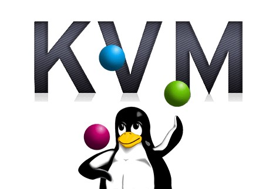
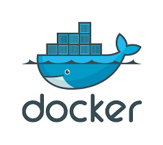

Virtualización En Linux
La virtualización en Linux es una tecnología que permite ejecutar múltiples sistemas operativos en una sola máquina física, compartiendo los recursos del hardware de forma eficiente. Esta técnica crea "máquinas virtuales" (VM) en las que cada una actúa como si fuera un sistema independiente con su propio sistema operativo, aplicaciones y recursos asignados.
KVM (Kernel-based Virtual Machine)

KVM (para máquina virtual basada en kernel) es una solución de virtualización completa para Linux en hardware x86 que contiene extensiones de virtualización (Intel VT o AMD-V). Consiste en un módulo de kernel cargable, kvm.ko, que proporciona la infraestructura de virtualización central y un módulo específico del procesador, kvm-intel.ko o kvm-amd.ko.
Con KVM, se pueden ejecutar varias máquinas virtuales que ejecutan imágenes de Linux o Windows sin modificar. Cada máquina virtual tiene hardware virtualizado privado: una tarjeta de red, disco, adaptador gráfico, etc.
KVM es un software de código abierto. El componente del kernel de KVM se incluye en la línea principal de Linux, a partir del 2.6.20. El componente de espacio de usuario de KVM está incluido en la línea principal QEMU, a partir de 1.3.
Ventajas
- Alto rendimiento, ya que se ejecuta directamente sobre el hardware.
- Soporta una amplia variedad de sistemas operativos invitados.
- Integración con herramientas de gestión como libvirt.
Desventajas
- Solo puede utilizarse en máquinas que tengan procesadores compatibles, lo que limita su uso en hardware más antiguo o menos potente.
- Algunas aplicaciones no están optimizadas para funcionar en entornos virtualizados KVM.
- Aunque KVM es eficiente, puede consumir más recursos que otros hipervisores de tipo 1.
VirtualBox
VirtualBox es un software de virtualización multiplataforma. Permite a los usuarios ampliar su computadora existente para ejecutar múltiples sistemas operativos, incluidos Microsoft Windows, Mac OS X, Linux y Oracle Solaris, al mismo tiempo.
Diseñado para desarrolladores y profesionales de TI, VirtualBox es ideal para probar, desarrollar, demostrar, e implementar soluciones en múltiples plataformas desde una sola máquina; aprovechar las innovaciones introducidas en el sistema x86 moderno plataforma de hardware, es liviana y fácil de instalar y usar.
Ventajas
- Interfaz gráfica amigable, lo que facilita su uso.
- Soporta una amplia gama de sistemas operativos.
- Ideal para entornos de desarrollo y pruebas.
Desventajas
- Tiende a consumir más recursos del sistema y ofrece un rendimiento inferior, especialmente en entornos de alta carga.
- funcionalidades avanzadas, como soporte de red en modo puente (bridged networking), arranque PXE, o clonación avanzada, están limitadas o ausentes en la versión gratuita de VirtualBox.
- Es un hipervisor de tipo 2 (de nivel de usuario), lo que significa que se ejecuta en el sistema operativo host y depende de él para la gestión de recursos.

Docker

La tecnología Docker utiliza el kernel de Linux y las características del kernel, como Cgroups y espacios de nombres, para segregar procesos para que puedan ejecutarse de forma independiente.
Esta independencia es la intención de los contenedores: la capacidad de ejecutar múltiples procesos y aplicaciones por separado para hacer un mejor uso de su infraestructura y al mismo tiempo conservar la seguridad que tendría con sistemas separados.
Las herramientas de contenedor, incluido Docker, proporcionan un modelo de implementación basado en imágenes. Esto facilita compartir una aplicación o un conjunto de servicios con todas sus dependencias en múltiples entornos.
Docker también automatiza la implementación de la aplicación (o conjuntos combinados de procesos que componen una aplicación) dentro de este entorno de contenedor.
Ventajas
- Portabilidad, ya que los contenedores se pueden ejecutar en cualquier entorno compatible con Docker.
- Eficiencia en el uso de recursos, ya que comparten el mismo núcleo del sistema operativo.
- Facilita la escalabilidad y la gestión de microservicios.
Desventajas
- Los contenedores de Docker están diseñados para ser efímeros, por lo que los datos guardados dentro del contenedor pueden perderse si este se detiene o se elimina.
- Comparte el mismo kernel entre todos los contenedores y el host, lo cual puede ser un riesgo de seguridad si se ejecutan contenedores de terceros o no confiables.
- Usa redes virtuales que pueden complicar la configuración y reducir el rendimiento de la red en Linux.